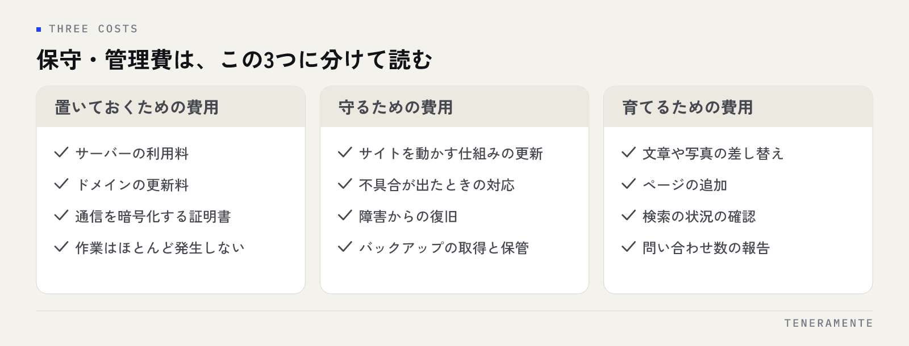

ホームページの制作を依頼すると、公開の前後で必ず保守契約の話が出ます。結論から申し上げると、ホームページの保守・管理費は「置いておく費用」「守る費用」「育てる費用」のどれに払っているのかで読み方が変わります。この3つが混ざったまま月額だけを提示されると、高いのか安いのかを判断できません。この記事では、保守契約の中身を性質ごとに分けて、契約前に確かめる順番を整理します。
📌 この記事の結論
保守・管理費を比べるときは、金額ではなく作業が含まれているかどうかを見てください。サーバーとドメインを置いておくだけの月額と、更新や表示の確認まで含む月額は別物です。見積もりに作業の名前が書かれていない保守契約は、何も頼めない契約になりがちです。
01ホームページの保守・管理費は、3つの性質に分かれる
保守・管理費という1行は、中身をほどくと性質の違う3つの費用が入っています。この3つを分けて見るだけで、提案の読み方が変わります。

一つ目は、置いておくための費用です。サーバーの利用料、ドメインの更新料、通信を暗号化する証明書の費用。サイトをインターネット上に存在させ続けるための実費で、作業はほとんど発生しません。
二つ目は、守るための費用です。サイトを動かしている仕組みの更新、不具合が出たときの対応、万一の障害からの復旧、バックアップの保管。何も起きていないときには見えませんが、止まったときに効いてくる部分です。
三つ目は、育てるための費用です。文章や写真の差し替え、ページの追加、検索の状況の確認、問い合わせ数の報告。サイトの中身を増やし、良くしていく作業がここに入ります。
提案書を見るときは、この3つのどこに費用が置かれているかを確かめるのが出発点です。置いておく費用だけで月額が構成されている場合、更新を頼むと別料金になります。費用の全体像はホームページ制作費用の内訳にまとめています。
02月額の保守契約に含まれていることが多い作業
保守契約の内容は会社によって幅がありますが、含まれやすい項目には傾向があります。提案書と見比べるために、作業ごとに何に対する費用かを並べます。
| 保守の項目 | 何をしてもらえるのか | 確かめること |
|---|---|---|
| サーバー・ドメインの管理 | サイトを置く場所と住所の維持、契約の更新 | 名義は自社か。移管できる形か |
| 証明書の更新 | 通信を暗号化する証明書の期限管理 | 切れた場合に誰が気づくのか |
| 仕組みの更新 | サイトを動かす土台や拡張機能の更新作業 | 月に一度か、随時か。作業記録は残るか |
| バックアップ | データの定期的な控えの取得と保管 | 何世代分、どこに保管されるか |
| 障害時の復旧 | 表示できなくなったときの原因調査と復旧 | 連絡から着手までの時間。休日の扱い |
| 軽微な更新作業 | 文章や写真の差し替え、営業時間の修正 | 月に何件までか。1件の範囲はどこまでか |
| 表示の確認 | スマートフォンや主要ブラウザでの表示崩れの確認 | 頻度。崩れていた場合の修正は含むか |
| 状況の報告 | 検索からの流入や問い合わせ数の共有 | 報告書だけか、読み方の説明まであるか |
このうち判断の分かれ目になるのは、軽微な更新作業と障害時の復旧の2つです。更新が月に何件まで含まれるのかは、公開後に文章を直す頻度に直結します。復旧の着手時間は、店舗や予約を扱うサイトでは売上に直結します。作業の件数と時間が書かれているかどうかが、実務で使える契約かどうかを決めます。
03都度料金になりやすい作業と、その見分け方
保守に含まれず、発生のたびに費用がかかる作業もあります。これを事前に知っておくと、公開後の支出の見通しが立ちます。
都度になりやすいのは、まずページの新規追加です。既存ページの文字を直すのは保守、新しいページを増やすのは制作、という線引きが一般的です。次にデザインの変更です。色や配置を変える作業は、文字の差し替えとは別の扱いになります。
写真の加工や撮影、バナーの作成も、素材を作る作業なので別料金になりやすい部分です。問い合わせフォームの項目を増やす、地図を入れ替える、外部サービスと連携させるといった機能の追加も同様です。
見分け方は単純で、その作業をするために新しく作るものがあるかどうかで分かれます。既にあるものを入れ替えるのは保守、新しく作るのは制作。この線が提案書に書かれていない場合は、自分の言葉で確認して、議事録や見積もりに残してもらってください。
注意したい書き方
「軽微な修正は無償で対応」とだけ書かれた契約は、軽微の範囲が双方で食い違いやすい部分です。文字の差し替えは何件まで、写真の差し替えは含むのか、ページの追加は別料金か。この3つを文面で確かめておくと、公開後のやりとりが短く済みます。
04保守契約を付けない場合、何が自社に残るのか
保守を外して費用を抑える判断もあり得ます。その場合に自社へ戻ってくる作業を、先に把握しておく必要があります。
残るのは4種類の作業です。期限の管理（ドメイン、証明書、サーバーの契約更新日を自分で把握する）。土台の更新（サイトを動かす仕組みの更新を自分で当てる）。異常の検知（表示できなくなったことに自分で気づく）。復旧（止まったときに誰に頼むかを、止まってから探す）。
このうち現実に困るのは、期限の管理と異常の検知です。証明書が切れると、閲覧者のブラウザに警告が出ます。ドメインの更新を忘れると、サイトもメールも同時に止まります。どちらも日付が決まっているので、カレンダーに入れておけば防げますが、入れていないと気づく手段がありません。
保守を付けないと決めるなら、契約の更新日を一覧にして、担当者を人の名前まで決めることが条件になります。これができないなら、置いておく費用と守る費用の部分だけでも契約に残す判断が現実的です。
05更新の仕組みの有無で、月額の意味が変わる
同じ月額でも、サイトに更新の仕組み（管理画面）が付いているかどうかで、払っている内容がまったく変わります。
管理画面があり、自社で文章・写真・ページを変えられる場合、月額に求めるのは置いておく費用と守る費用です。育てる部分は社内で動かせるので、更新代行の件数は少なくて構いません。この形では、月額が低めでも運用は止まりません。
管理画面が無く、更新のたびに依頼が必要な場合、月額に育てる費用が入っていなければ、文字を1行直すだけでも都度の見積もりと待ち時間が発生します。情報が古いまま放置されるサイトは、ほぼこの形です。
ですから保守費用の妥当性は、更新を誰がやるのかを決めてから判断するという順番になります。この順番を逆にすると、月額の数字だけを比べることになり、公開後に動かせないサイトが残ります。作り直しを検討する時期の目安はホームページのリニューアル時期にまとめています。
06提案された保守契約を読むときのチェックリスト
提案書を受け取ったら、次の項目を上から順に確かめてください。そのまま先方への質問としても使えます。
- 月額に含まれる作業の名前が、項目ごとに書かれているか
- 更新作業は月に何件までか。件数を超えた場合の料金はいくらか
- 1件の更新の範囲はどこまでか（文字だけか、写真を含むか）
- ページの追加は保守か、都度の制作か
- 障害の連絡先と受付時間。休日・夜間の扱い
- 連絡から着手までの目安時間が書かれているか
- バックアップの頻度、保管場所、何世代分残るか
- サイトを動かす仕組みの更新は、誰がいつ行うか
- ドメイン・サーバー・証明書の名義は自社か
- 報告はあるか。何を、どの頻度で受け取れるか
- 契約期間と、途中で解約する場合の条件
- 解約したときに、サイトのデータと原稿が自社に残るか
全部に答えが返ってくる必要はありませんが、書かれていない項目こそ、後で費用と時間の差になって現れます。特に最後の2つは、将来ほかの会社に移る選択肢を残せるかどうかに関わるので、契約前に文字で確かめておいてください。
07よくある失敗と、その避け方
月額の金額だけで比べる。置いておくだけの月額と、更新を含む月額を並べても比較になりません。作業の名前と件数で比べてください。
更新の件数を確かめずに契約する。公開後に直したい箇所は、最初の数か月で集中して出ます。件数の上限と超過分の料金を先に聞いてください。
障害時の受付時間を見ていない。平日の日中しか受け付けない契約は、土日に営業する店舗のサイトでは成立しません。営業日と合っているかを確かめてください。
ドメインの名義を制作会社のままにする。移るときに交渉が必要になります。公開前に自社名義にできるか聞いてください。
バックアップがあると思い込む。取得の有無と保管期間は契約に書かれているかで決まります。書いていなければ無いものとして扱ってください。
保守を外したのに、更新日を管理していない。証明書やドメインが切れると、気づく前に止まります。外すなら期限の一覧と担当者を必ず決めてください。
報告書を受け取るだけで読まない。数字が並んだ報告は、読み方の説明がないと判断に使えません。何を見ればよいかを一緒に決めてください。
08自分で進める場合と、専門家に任せる場合の分かれ目
一般論として、判断の基準は3つあります。
一つ目は、サイトが止まったときの影響の大きさです。問い合わせや予約がサイト経由で入っている場合、表示できない時間がそのまま機会の損失になります。止まったときに相談できる相手を月額で確保しておく意味は、この影響の大きさに比例します。会社案内だけのサイトであれば、守る費用を最小限にする判断もあり得ます。
二つ目は、社内で期限と作業を管理できるかどうかです。契約の更新日を把握し、仕組みの更新に気づき、表示の崩れを定期的に確かめる。この3つを続けられる担当者が居るなら、自分たちで管理する選択は現実的です。兼務で手が回らないなら、保守として任せたほうが結果的に安く済みます。
三つ目は、サイトの中身を増やし続けたいかどうかです。情報を足し続ける前提なら、更新の仕組みを自社で動かせる形にして、育てる部分は社内に置くのが速くなります。中身を増やす予定が無いサイトなら、置いておく費用と守る費用だけで足ります。
迷うときは、サイトが1日止まったときに困ることを書き出してみてください。困ることが具体的に出てくるなら守る費用を確保し、出てこないなら最小限から始める。この判断で、過不足のない契約に近づきます。
09よくある質問
保守契約は必ず結ばないといけないのですか？
制作した会社以外に保守を頼めますか？
月額に更新作業が含まれているか、どう見分けますか？
自分たちで更新できるサイトなら、保守は不要ですか？
保守を解約したいときは、何を確かめればよいですか？
10まとめ：月額の中身が書かれていれば、保守費は判断できる
ホームページの保守・管理費を読むときの順番は決まっています。月額を3つの性質に分ける。含まれる作業の名前と件数を確かめる。都度料金になる作業の線引きを文字で残す。障害時の受付時間と着手の目安を聞く。ドメインと名義、解約時に残るものを確認する。ここまでやれば、金額の高低ではなく、自社に必要な範囲で選べます。
逆に、作業の名前が書かれていない月額を金額だけで比べると、公開後に何も頼めない契約が残ります。保守費用は、サイトを止めないためと、中身を増やし続けるために払うものです。
TENERAMENTEなら、この記事で問題にした「月額を払っているのに更新を頼めない」という状態が起きにくい形でお渡しします。自社CMS「ミルページ」で制作するため、文章・写真・ページの追加はオーナー自身が管理画面から行えます。ブログの下書きと自動投稿、SEO管理、Googleとの連携も同じ画面に入っているので、更新のたびに依頼して反映を待つ時間がなくなり、営業時間や実績をその日のうちに直せます。公開後は伴走しながら一緒に育てる形を取っており、制作と運用の範囲はHP/LP作成にまとめています。初回のご相談60分は無料ですので、提案された保守契約の読み方で迷っている段階でも、お問い合わせからお気軽にご相談ください。